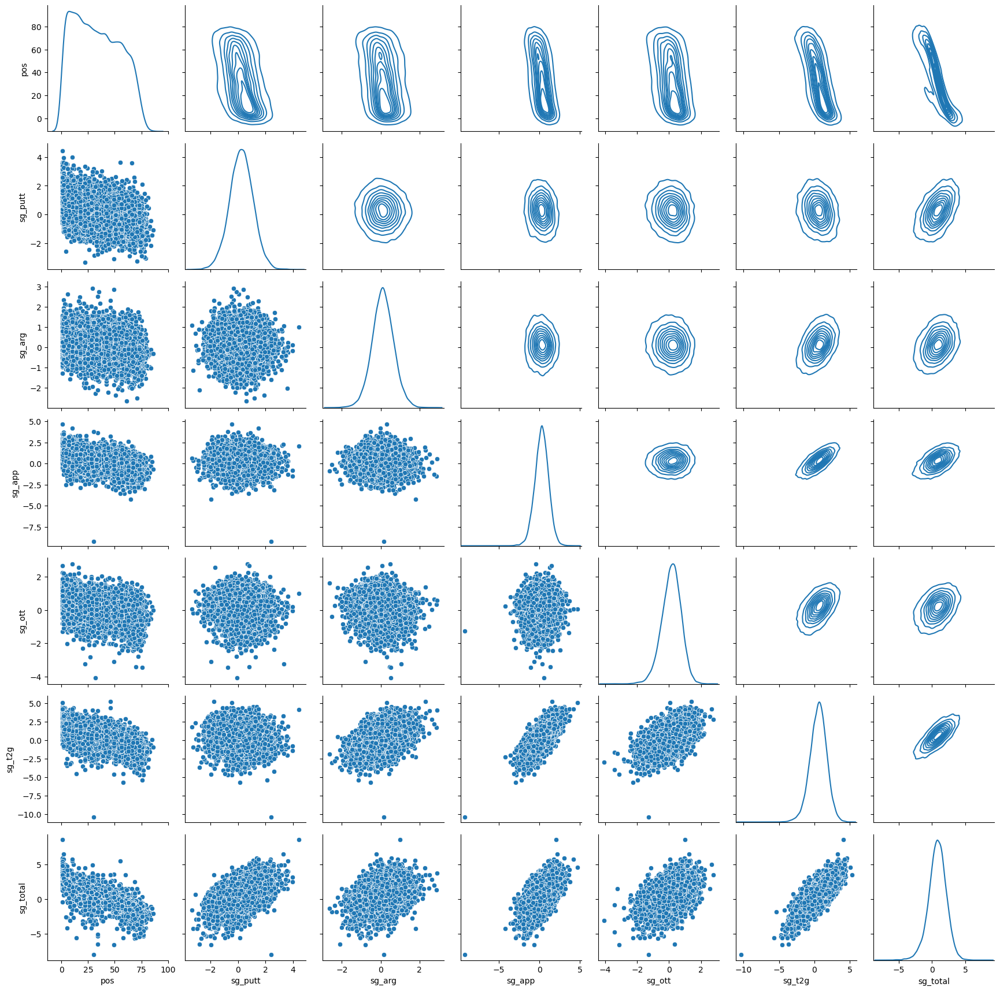
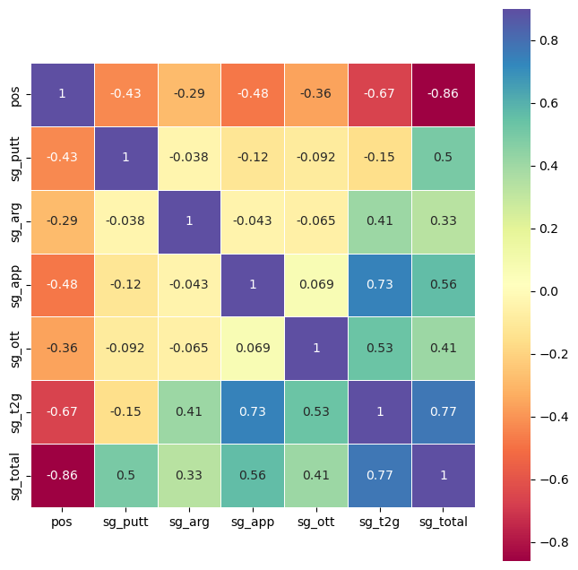
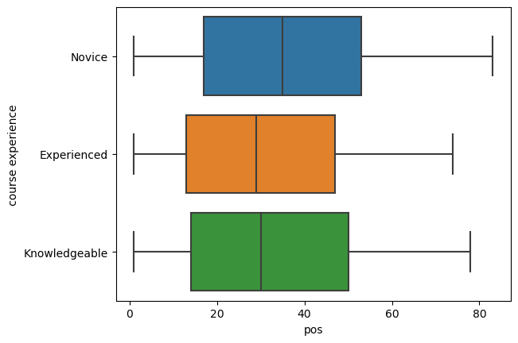
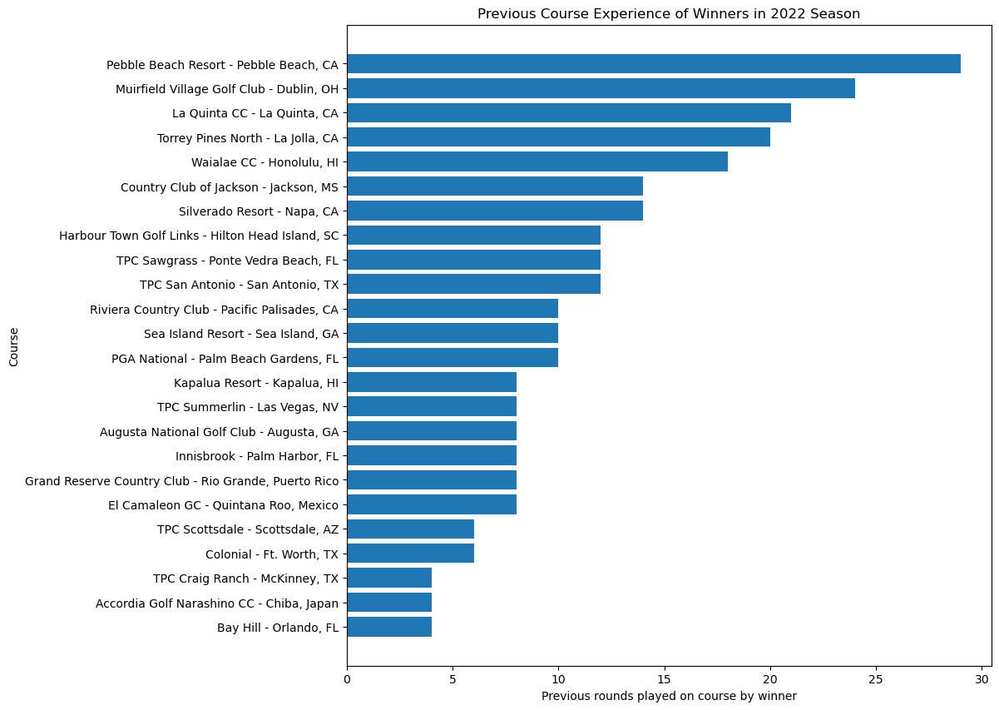
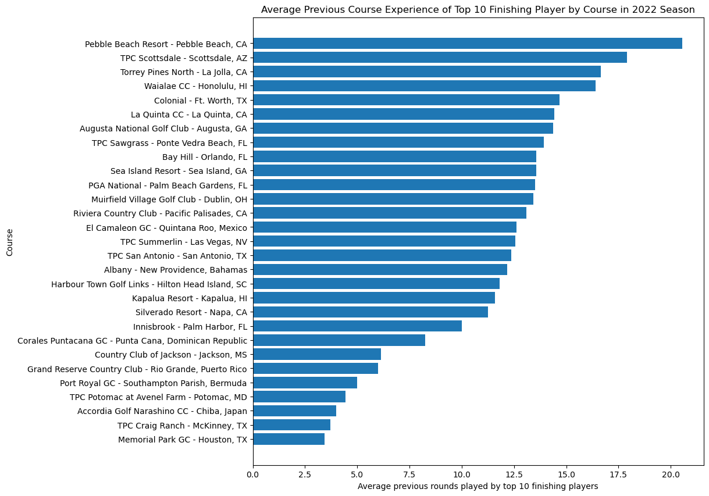

Author: Stefan Jenss
This exploratory data analysis (EDA) explores the raw data from all Professional Golf Association (PGA) Tour tournaments between the 2015 - 2022 seasons to discover trends and insights into the game of professional golf and which factors might influence a player's success on the tour.
I conducted an exploratory data analysis (EDA) on a raw dataset of PGA Tour Golf. The dataset covers all the rounds played by every golfer in all the tournaments held between the professional seasons of 2015 and 2022. My aim for this analysis was to gain insights into which aspects of players’ golf games most impact their performance in tournaments. Additionally, I aimed to identify characteristics of various courses on the PGA Tour schedule, such as determining which courses favor golfers with more course experience and the courses where putting plays a crucial role in contending in the tournament.
Note: If you have background knowledge of the game of golf, please feel free to skip to the next section at this point.
If you're not familiar with the game of golf, it's an individual sport where players use different clubs to hit a golf ball into a 4.5" hole, usually placed hundreds of yards away from the starting point—or the tee box. Each time a player hits the ball with a club, it's called a stroke. The sole objective of golf is to get the ball in the hole in the least number of strokes possible. The number of strokes it takes to get the ball in the hole is compared to the par of the hole. Par is the expected number of strokes it takes for a proficient golfer to get the ball in the hole. A full round of golf has 18 holes, with each hole ranging from par 3 to 5 and the entire round usually being between par 69 and 73. If a player consistently scores the same as the course's par, they're considered a "scratch" or 0-handicap golfer.
PGA Tour Golf tournaments are played over four consecutive days (Thursday through Sunday), and for most tournaments, there is a cut after the second round before the weekend. The cut consists of the top ~70 players advancing to the final two rounds, with the rest of the field being eliminated from the tournaments. Players who don’t make the cut don’t get to compete during the weekend and don’t earn any prize money.
Like many other sports, golf generates a plethora of data regarding player performance, making it an ideal c andidate for data analysis. One of the gold standards for golf statistics is a measure called strokes gained. Strokes gained is a widely accepted standard in golf statistics that evaluates the number of strokes a golfer gains or loses in a specific area of their game when compared to other players of similar skill levels. For instance, on the PGA Tour, the pool of players used for comparison is those competing in the tournament. Strokes gained statistics measure various aspects of a player's game, including driving, approach shots, shots around the green, putting, and more. This statistic provides valuable insights to golfers, enabling them to identify their strengths and weaknesses and pinpoint key areas for improvement.
Below is a description of each of the strokes gained measurements that will be included in this analysis:
Strokes gained - putting: this is the measure of how many strokes a player gains or loses on the putting green. It is calculated by comparing the player’s actual number of putts to the expected number of putts based on the initial distance the player has to the hole.
Strokes gained - around the green: this is the measure of how many strokes a player gains or loses on shots that are typically within 30 years of the edge of the green. This does not include putting on the green.
Strokes gained - approaching the green: this is the measure of how many strokes a player gains or loses on shots that are not the tee shot on par 4 and 5s, and the tee shots on par 3s.
Strokes gained - off the tee: this is the measure of how many strokes a player gains or loses on shots off the tee on par 4s and 5s.
Strokes gained - tee to green: this is the measure of how many strokes a player gains or loses on all shots that were taken from the tee box until the ball reaches the green.
I choose to analyze a PGA Tour golf dataset because of my passion for the sport. I enjoy both watching and playing golf, and one of the things that fascinates me about the sport is the way it blends art and science. The game demands a great deal of skill and imagination while also allowing for thorough analysis to enhance your performance.
I have several hypotheses for this EDA, including the following:
Hypothesis #1: When it comes to winning professional golf tournaments, certain aspects of a player’s game are more essential than others. Specifically, there are particular strokes gained measurements that have a more significant impact on a player’s overall performance in a tournament.
Hypothesis #2: Golfers with more course experience will perform better, and there are specific courses on the PGA tour schedule that reward players with the most experience on that course.
Hypothesis #3: There are specific courses on the PGA tour schedule in which it is important to be “hot with the putter” (have high strokes gained - putting statistic).
The data used for the analysis was initially obtained from advancedsportsanalytics.com, which is now offline. However, the dataset is still available thanks to a Kaggle.com user who has uploaded it. The dataset can be accessed through the following link:
https://www.kaggle.com/datasets/robikscube/pga-tour-golf-data-20152022
Upon my first examination of the dataset, I observed that several of the earlier tournaments lacked strokes gained data. To avoid omitting important data from these tournaments in my analysis of course experience, I decided to create two separate DataFrames for my analysis. One of the DataFrames excluded tournaments without strokes gained information, while the other included a value of 0 for all missing strokes gained data. This way, I could still analyze the other relevant data from those tournaments.
Below is the information from the original dataset:
Dropping Empty Variables: To begin cleaning the data, I removed variables that held no valuable information. These variables were "Unnamed: 2", "Unnamed: 3", and "Unnamed: 4". After careful inspection, I confirmed that they contained no useful information and proceeded to drop them from the dataset.
Dropping Undesired Variables: Furthermore, all variables containing DKP, FDP, and SDP information were not necessary in the final dataset. This was due to the unavailability of the advancedsportsanalytics.com website, which made it difficult for me to determine the meaning of these variables. Therefore, after examining the DKP, FDP, and SDP variables to ensure that they did not contain any valuable information, I removed them from the dataset. The variables that were removed include:
Identifying and Changing Identifying Variables: Next, I identified all of the identifying variables and changed them to string objects. These variables included:
Addressing Missing Values in Full Dataset:
Creating New Strokes Gained DataFrame: For the data analysis involving strokes gained data, I did not want to include the tournament in which strokes gained data was missing. Therefore, I created a new strokes gained dataset. I achieved this by first identifying all the tournaments that had strokes gained data. This was done by calculating the average total strokes gains for each tournament. If a tournament had a non-zero total strokes gained average, this meant that the tournament contained strokes gained data, and I included this tournament in the list of tournaments to include in the strokes gained dataset. Finally, to create a strokes gained dataset, I simply remade the original dataset, but only included instances with tournament IDs that match those on the list of tournaments with strokes gained data, and then repeated the steps to address and drop all nulls.
Creation of “total rounds” and “course experience” variables: To answer the course experience question, I decided to analyze the 2022 season using data from the 2015 to 2021 seasons to determine the players' experience with the courses during the 2022 season. To do this, I created a new DataFrame containing two new variables.
The first was “total rounds,” which represented the total number of rounds the player has previously played on that course between the 2015 to 2021 seasons.
The second variable was "course experience," which assigned each player in the 2022 season a course experience label. The three labels were "Experienced" (having played more than 16 rounds on the course), "Knowledgeable" (having played between 5 and 15 rounds on the course), and "Novice” (having played 4 or fewer rounds on the course).

| Variable | Description | Data Type |
|---|---|---|
| Player_initial_last | Initial of player's first name and their full last name | string |
| player | The player's full name | string |
| player id | A unique ID assigned to each individual player | string |
| tournament name | The name of a tournament | string |
| tournament id | A unique ID assigned to each individual tournament | string |
| course | The name of the course the tournament is being played at | string |
| date | The date the tournament is being played | string |
| season | The year the tournament is being played | string |
| purse | The total prize money available for the tournament | float |
| hole_par | The number of stroke expected for a player to get throughout tournament | integer |
| strokes | The actual number of stroke the player had over the course of a tournament | integer |
| n-rounds | The number of golf round a player completed in a tournament | integer |
| made_cut | Whether a player made the cut after the second round to continue onto the weekend rounds | integer |
| Finish | The position a player finished in a tournament (indicates whether they tied for that position) | string |
| pos | The numerical position a player finished (exclusing whether they tied for that position) | float |
| no_cut | Whether or not the event included a cut after the first two days | integer |
| sg_putt | Strokes gained: putting | float |
| sg_arg | Strokes gained: around the green | float |
| sg_app | Strokes gained: approach the green | float |
| sg_ott | Strokes gained: off the tee | float |
| sg_t2g | Strokes gained: tee to green | float |
| sg_total | The total strokes gained over the round | float |
| total round | The total number of rounds a player has completed on a given golf course between the 2015 and 2021 season to be used as a reference for their performance in the 2022 season | integer |
| course experience | The label assigned to a player in the 2022 season based on the experience they had with the course between the 2015 and 2021 seasons | string |
There are three datasets that resulted from the data cleaning process:
.info() for pga_clean dataset
| Column | Non-Null Count | Dtype |
|---|---|---|
| Player_initial_last | 36864 | object |
| tournament id | 36864 | int64 |
| player id | 36864 | int64 |
| hole_par | 36864 | int64 |
| strokes | 36864 | int64 |
| n_rounds | 36864 | int64 |
| made_cut | 36864 | int64 |
| pos | 36864 | float64 |
| player | 36864 | object |
| tournament name | 36864 | object |
| course | 36864 | object |
| date | 36864 | object |
| purse | 36864 | float64 |
| season | 36864 | int64 |
| no_cut | 36864 | int64 |
| Finish | 36864 | object |
| sg_putt | 36864 | float64 |
| sg_arg | 36864 | float64 |
| sg_app | 36864 | float64 |
| sg_ott | 36864 | float64 |
| sg_t2g | 36864 | float64 |
| sg_total | 36864 | float64 |
| Data columns (total 22 columns) | ||
| dtypes: float64(8), int64(8), object(6) |
.info() for pga_sg dataset
| Column | Non-Null Count | Dtype |
|---|---|---|
| Player_initial_last | 29180 | object |
| tournament id | 29180 | int64 |
| player id | 29180 | int64 |
| hole_par | 29180 | int64 |
| strokes | 29180 | int64 |
| n_rounds | 29180 | int64 |
| made_cut | 29180 | int64 |
| pos | 29180 | float64 |
| player | 29180 | object |
| tournament name | 29180 | object |
| course | 29180 | object |
| date | 29180 | object |
| purse | 29180 | float64 |
| season | 29180 | int64 |
| no_cut | 29180 | int64 |
| Finish | 29180 | object |
| sg_putt | 29180 | float64 |
| sg_arg | 29180 | float64 |
| sg_app | 29180 | float64 |
| sg_ott | 29180 | float64 |
| sg_t2g | 29180 | float64 |
| sg_total | 29180 | float64 |
| Data columns (total 22 columns) | ||
| dtypes: float64(8), int64(8), object(6) |
.info() for season_2022_exp dataset
| Column | Non-Null Count | Dtype |
|---|---|---|
| player | 2566 | object |
| course | 2566 | object |
| previous total rounds | 2566 | int64 |
| course experience | 2566 | object |
| Player_initial_last | 2566 | object |
| tournament id | 2566 | int64 |
| player id | 2566 | int64 |
| hole_par | 2566 | int64 |
| strokes | 2566 | int64 |
| n_rounds | 2566 | int64 |
| made_cut | 2566 | int64 |
| pos | 2566 | float64 |
| tournament name | 2566 | object |
| date | 2566 | object |
| purse | 2566 | float64 |
| season | 2566 | int64 |
| no_cut | 2566 | int64 |
| Finish | 2566 | object |
| sg_putt | 2566 | float64 |
| sg_arg | 2566 | float64 |
| sg_app | 2566 | float64 |
| sg_ott | 2566 | float64 |
| sg_t2g | 2566 | float64 |
| sg_total | 2566 | float64 |
| Data columns (total 24 columns) | ||
| dtypes: float64(8), int64(9), object(7) |
Question: What aspect of a player's golf game is the most important predictor of whether or not they perform well in a tournament?
I first created a PairGrid plot containing pair plots and kernal density estimate (KDE) plots to visually analyze which strokes gained variables are most related to the players' finishing positions.

Important note:
Key takeaways:
When determining which aspects of a player's game are the most important predictor of whether they perform well in a tournament, we are most interested in the top row of the PairGrid, and the leftmost column of the PairGrid.
For the top row of kernel density estimate (KDE) plots, the top performing players are those towards the bottom of the graph, so we want to see which variables have the most negative relationship.
“Strokes Gained - Approach” and “Strokes Gained -Tee 2 Green” being the most important indicators of a player's performance in a golf tournament is also supported by the following plots:
Strokes Gained - Approach x Strokes Gained - Total (both scatter and KDE plots)
Strokes Gained - Tee to Green x Strokes Gained - Total (both scatter and KDE plots)
Further, we observe the relationship between “Strokes Gained - Tee to Green” and the other strokes gained variables, we see that ‘Strokes Gained - Tee to Green” has the strongest positive correlation with “Strokes Gained - Approach.” This indicates that how a player is performing with their approach shots strongly contributes to their “Stroked Gained - Tee to Green” and their overall success in tournaments.
Next, I created a correlation heatmap matrices to analyze the correlations between the different strokes gained statistics and the players' finishing positions.

Key takeaways:
Question: Do PGA Tour players with more experience perform better than those with less? And are there specific courses on the PGA Tour schedule that reward golfers with more course experience?
First, I generated side-by-side boxplots of player course experience and finishing position to see if the distributions show any meaningful difference.

Impression:
In general, experienced and knowledgeable golfers tend to perform slightly better than novice players; however, the difference in the distribution is not significant.
Out of the three categories, experienced golfers tend to perform the best. This is expected, as in most sports (up until a certain point) the more time they have to improve and understand their game, the better they will perform. However, it is important to note that there is little difference in distribution between the experienced and knowledgeable golfers.
Secondly, I created a bar graph that shows the total number of rounds the previous winners had played on the course prior to them winning there in the 2022 season.

Impression:
I then repeated step two, but instead of just including the golfers who won the tournament, I included the average total previous rounds played of all the players who placed 5th or above.

Impression:
When considering the average previous total rounds played among players finishing 5th or above, the top 5 courses that favor course experience are:
In this list, Pebble Beach Resort remains the top course that favors course experience. The only course that difference between these two lists are that Muirfield Village Golf Club moves out of the top 5 down to 15th, and Albany - New Providence is the new 5th.
I repeated this, again, for all players who place 10th or above to see how the results change when including a larger sample of the top performing golfers.

Impression:
When considering the average previous total rounds played among players finishing 5th or above, the top 10 courses that favor course experience are:
In this list, Pebble Beach Report remains the top course that favors course experience. The courses that remain from the first two lists are Pebble Beach Report, Torrey Pines North, and Waialae CC. The new courses that enter the top 5 are TPC Scottsdale and Colonial.
Question: On which courses is it most important to be "hot with the putter?" In other words, on which courses is it most important to be putting well in order to be in contention to win?
Approach:

Impression:
In the 2015 to 2022 PGA Tour seasons, the courses where being “hot with the putter” has been most important have been:
The aim of this exploratory data analysis on PGA Tour data was to gain insight into which aspects of the professional golf game are most important in being a top competitor and to identify trends within the PGA Tour schedule that can help us better understand the courses that are played and whether specific courses favor or require different things, such as course experience or quality putting. This project required extensive cleaning of the PGA Tour Raw Dataset generated by advancedsportsanalytics.com, and the tailoring of variables to best suit the desired analysis. After the cleaning process was complete, multiple analytical methods were used to analyze both player and tournament data, such as pair plots, kernel density estimate (KDE) plots, correlation heatmap matrices, box plots, and bar charts. This analysis ultimately provided valuable insight into which strokes gained metrics are the most crucial, which tournaments on the PGA tour schedule most favor players with course experience, and on which courses putting is most important.
The biggest difficulty when working with this dataset was that the original source for the dataset (advancedsportsanalytics.com) is no longer a working website, and as a result, I was unable to read any description of the dataset or what the reasoning was behind some of the variables that were included. For example, the DKP, FDP, and SDP variables were specific to this dataset, and I didn’t know what they represented. So even though they did not matter for the question I was trying to answer, it would have been convenient to know what these variables represented.
An additional challenge I faced when working with this dataset was that much of the analysis I was performing involved the strokes gained variables. However, there were many tournaments where this information was not included. I was able to work around this obstacle by creating two datasets, one with only the player-tournament information that included strokes gained data, and another with all the player-tournament information with zeros in place for any null strokes gained data.
There were three main conclusions drawn from this data analysis:
There are endless possibilities for the analysis that could be performed on the data produced by PGA Tour golfers. Some possible next steps to continue the work of this analysis of the PGA Tour dataset could be to analyze individual seasons, individual tournaments, or individual players. For example, it would be interesting to group all the tournament results by course and see which strokes gained measures are most important for each course. A potential application of such analysis could be that if players knew which aspects of the golf game were most important for each course they are playing on, they could focus their practice the week before tournaments on those courses to strengthen that specific aspect of their game and hopefully have a better chance of competing for a win.
Additionally, for individual players of interest, further analysis could be performed to analyze their performance over time and to identify trends in their performance, such as during which time of the season they typically perform the best and on which courses best suit their game.
The possibilities and depth of the analysis that can be performed on the data produced by golf are endless and can provide value to both the players and those who love watching the game. Looking forward, I am excited to explore more data while growing my love for the game of golf as my data analysis skills grow and develop.